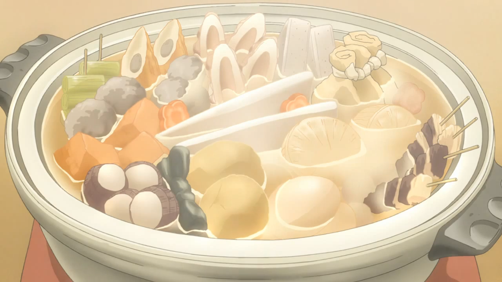

Oden
In life, Oden,the daimyo of Kuri in Wano Country, is one of the strongest characters in the One Piece world and wields two legendary swords: Ame no Habakiri and Enma. Named after the favorite food, Oden, the daimyo declared he was born to be boiled like oden soup. Oden is a type of hot pot dish, consisting of several ingredients such as boiled eggs, daikon, konjac, and processed fishcakes stewed in a light, soy-flavored dashi broth.
Ingredients
-

- Broth: Awase Dashi
- Assorted fish cakes and fish balls (nerimono)
- Daikon radish
- Konnyaku (Konjac)
- Boiled eggs
- Knotted kombu
- Optional:Potatoes,Satoimo (Japanese taros),Boiled octopus or squid,Gyusuji (beef tendon), Chicken wings, Pork offal, Spareribs, Sausages, Shirataki noodles, Cabbage rolls, Bean sprouts, and more!
Steps
-
Credit
- Cut the daikon into thick rounds and cook for 20 minutes. Drain and set aside.
- Cut the konnyaku block into triangle-shaped pieces and blanch for 3 minutes. Drain and set aside.
- Blanch the deep-fried fish cakes in boiling water for 15-30 seconds to remove excess oil.
- Make the oden broth in a large pot or donabe (Japanese clay pot).
- Add the daikon, konnyaku, and boiled eggs to the broth. Once simmering, cook for 20 minutes.
- Add fish cakes to the pot and simmer for 10 minutes.
- Add the hanpen and mochi kinchaku and simmer for 3 minutes. Serve oden with karashi mustard.